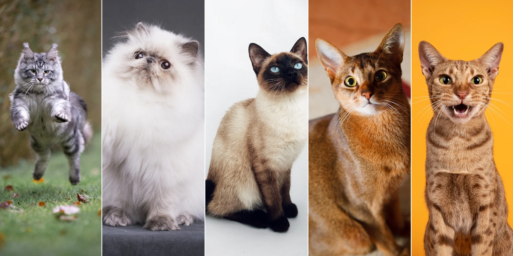
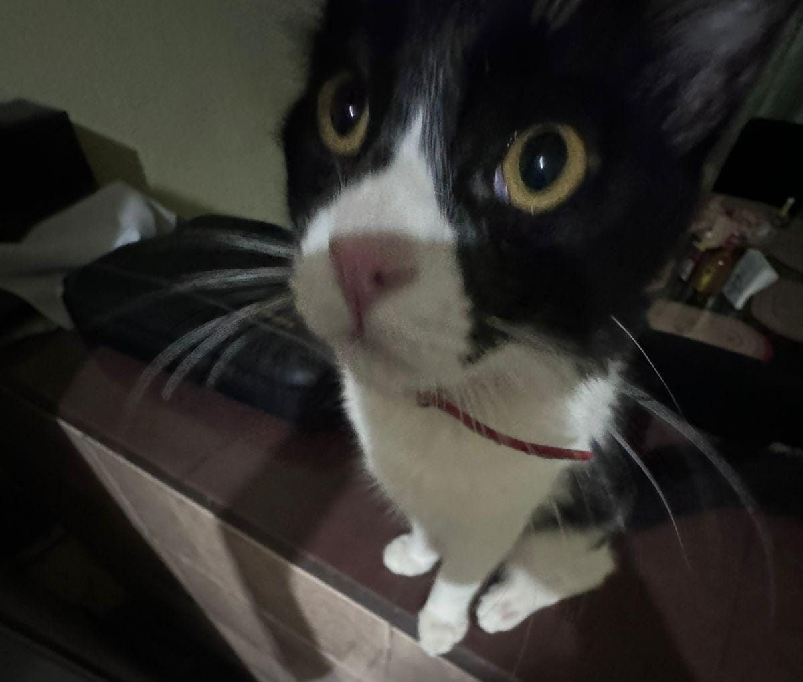
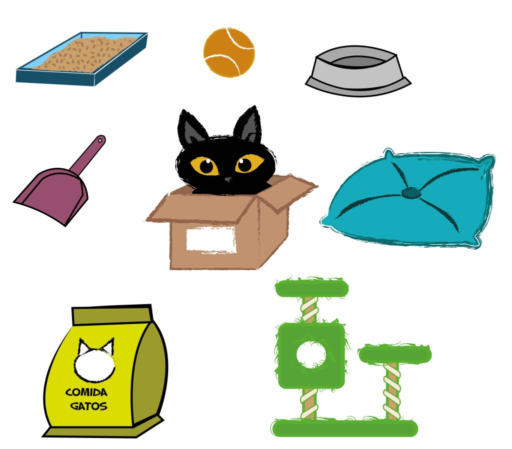

GATOS
Raza de gatos más populares
Persa
Siamés
Ruso Azul

Beneficios de tener un gato
Reducción del estrés.
Compañía y amistad.
Control de plagas.

Cuidados esenciales
Alimentación:
Dieta adecuada para la edad y siempre agua fresca.
Higiene:
Caja de arena siempre limpia y cepillado de pelaje.
Salud:
Chequeos y vacunas.
